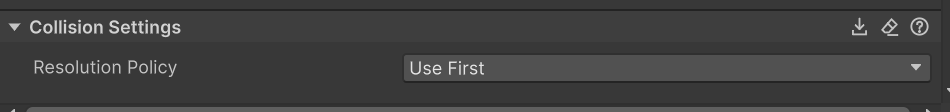

Collision Settings
These settings decide an attribute's root value when it appears in more than one element, across this set and its sub-sets. Only the settings of the set the entity names are used.

Ranger Attributes's Collision Settings section.
| Property | Description |
|---|---|
| Within This Set | How an attribute that one set gives twice settles, this set or a sub-set. Use Maximum by default. |
| With Sub-Sets | How an attribute that this set and its sub-sets each give settles. Same As Within This Set (default) settles every element at once by Within This Set. Any other policy settles each set's own elements by Within This Set first, then what each set gives by this one. |
Elements are taken in order: this set's first, then each sub-set's in turn. Each element's Collision says how it joins the others:
| Collision | What it does |
|---|---|
| Use Set Collision Setting (default) | Settles by the Collision Settings. |
| Use This | Stands over every other element. Several set to Use This settle among themselves by the settings. |
| Combine | Adds its value to what the other elements settle on. |
| Use Existing | Gives way to any other element. It counts only where nothing else gives the attribute. |
Both settings take the same policies:
| Policy | What it gives |
|---|---|
| Use Maximum (default) | The element with the highest Base magnitude. |
| Use Minimum | The element with the lowest Base magnitude. |
| Use Average | The average of the elements' values. |
| Use First and Use Last | The first or the last element. |
| Ignore | The first element stands. |
| Combine | The sum of the elements' values, each worked out on its own, its number and its scaler. |
- Where values are averaged or added up, bounds, rounding and the retention group come from the first element.
- For example, a sub-set gives Health = 20 × Strength, and this set gives Health a base of 200. With Within This Set at Use First and With Sub-Sets at Combine, Health starts at 200 + 20 × Strength. A second Health in this set doesn't add to it: Use First keeps the first.